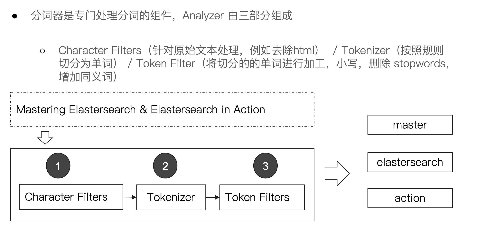

Analysis&Analyzer
分词器
- 

生命的意义是成为你自己！
PUT /ecommerce/product/1
{
"name" : "jiajieshi yagao",
"desc" : "youxiao fangzhu",
"price" : 27,
"producer" : "jiajieshi producer",
"tags": [ "fangzhu" ]
}
POST /ecommerce/product/1/_update
{
"doc": {
"name": "jiaqiangban gaolujie yagao"
}
}
商品index，里面存放了所有的商品数据，商品document
但是商品分很多种类，每个种类的document的field可能不太一样，比如说电器商品，可能还包含一些诸如售后时间范围这样的特殊field；生鲜商品，还包含一些诸如生鲜保质期之类的特殊field
type，日化商品type，电器商品type，生鲜商品type
日化商品type：product_id，product_name，product_desc，category_id，category_name
电器商品type：product_id，product_name，product_desc，category_id，category_name，service_period
生鲜商品type：product_id，product_name，product_desc，category_id，category_name，eat_period
| ES | Mysql |
|---|---|
| Doucument | 行 |
| Type | 表 |
| Index | 库 |


PUT /test_index/test_type/1?version=2
GET /test_index/test_type/1
put /test_index/test_type/1
{
"test_field1": "test field1",
"test_field2": "test field2"
}
GET /test_index/test_type/1?_source=test_field1,test_field2
{
"_index": "test_index",
"_type": "test_type",
"_id": "1",
"_version": 2,
"found": true,
"_source": {
"test_field2": "test field2"
}
}